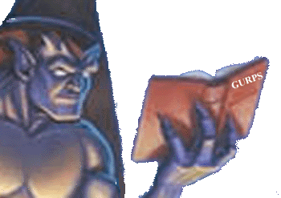

 |
Gaming at the Gathering! |
No experience is necessary to play.
A total of 10 players is the maximum allowed, 5
gargoyles and 5 members of the Third Race.
The game will use the Generic Universal
Role-Playing System, abbreviated GURPS,
by Steve Jackson Games.
(the Gathering 99 is very pleased to welcome Mr. Jackson
himself as one of our guests this year!)
How to Play
GURPS
is a point-based system of character creation. In some games, like AD&D,
the player rolls dice to determine the character's abilities;
in GURPS, the player will
have a set number of points, and each ability, skill,
and advantage costs a certain
amount.
Example: Ambidexterity, the ability
to use both hands with equal skill, is an
advantage. It costs ten points, so is written (+10).
In addition, the player may elect
to take traits, flaws, and disadvantages that limit the
character's options and thereby gain points.
Example: Impulsiveness, the tendency
to rush into things without planning, is a
disadvantage. It earns ten points, so is written (-10).
Don't Panic!
We're in this game to have fun, so
it is not necessary to understand the rules. GURPS
familiarity or gaming experience is helpful but not necessary.
This GM's (stands for Game Master)
style of play doesn't rely heavily on rules.
In general, you'll just say what you want to do, roll
dice, and that'll be that. Only in
combat or spellcasting
does it get complicated. And even then, it's a lot easier than it
looks. Hardly anyone can learn a game by reading the
rules; the only way to do it is
to jump on in and play.
The main rules to keep in mind are:
1. Have fun
2. Help others to have fun (don't kill off anyone else's
character or pick on fellow
players).
3. Remember that what you know about the world
may be very different from what
your character knows about the world.
4. Stay in character.
5. Have fun!
You have three options for designing your character:
1. Choose a Pre-generated character, already made up
and ready to go except for
choosing traits such as gender and appearance. Click
here for a list describing the
Pre-generated characters that will be available.
2. If you are familiar with GURPS, you may make up your
character yourself, using
the racial packages for Gargoyles
or Third Race and building with 200 points.
3. If you know what you want but don't know the game
system, e-mail the GM with a
list of traits and abilities you'd like your character
to have, and she will build it for
you within the alloted points.
Gaming at the Gathering 99:
There will be three seperate sessions
to the game. One group will be playing all
gargoyle PCs; their session will be first. Then those
players will get a break while the
second group, who will be playing characters from the
Third Race, have their turn.
Then, at the end, both groups will
be brought together for the big finale. The actual
times of these sessions have yet to be set.
The GM will provide:
Dice enough for everyone
Spare pencils and paper
A "battlemat" -- a clear piece of plastic marked with
hexes, used to figure out where
everyone is during combat
Pens to draw on the battlemat
Counters and/or figures to represent the characters and
opponents during combat
Pre-generated characters
Copies of characters created under Option 3 (see above)
GURPS rulebooks
Some refreshments
Calculator for figuring out all those complicated combats
You should bring:
Pencil and paper
Character sheet if you design your own
Drinks and munchies of your choice
Willingness to play and have fun
Optimally, everyone will rush out and
buy a few GURPS books, thereby
making our
gaming GoH Steve Jackson exceedingly happy ...
If you do, a Basic Book, the
Compendium I, Magic, and Grimoire would all be good
choices ... though GURPS
offers worldbooks for just about every genre, from fantasy
to space to superheroes, and nearly any setting or time
period you could wish (or
even all of them; let GURPS
Time Travel be your own personal Phoenix Gate!)
But, just in case you don't, click
here for a simplified and hopefully-not-too-
inaccurate rundown on the game.
Your character will be built on 200 points.
If you want to be a gargoyle, click here
If you want to be of the Third Race, click here